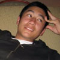

Executive
 President
President
Sayuri Shimoda, CC '10
sas2202@columbia.edu
 Vide President
Vide President
Hanako Maeda, CC '10
hm2129@columbia.edu
- Barnard VP
Minori Takahashi, BC '11
mt2468@columbia.edu
- Treasurer
Kyle Armington, SEAS '11
kja2115@columbia.edu
-
Event Coordinator (Technology)
Andrei Dinu-Ionita, CC '10
apd2117@columbia.edu
-
Event Coordinator (Decorations)
Kate Schultz, CC '11
kcs2116@columbia.edu
-
Event Coordinator (Publicity)
Travis Cone, CC '09
ctc2106@columbia.edu
 Event Coordinator (Graphics)
Event Coordinator (Graphics)
Christopher Lorn, CC '10
cjl2134@columbia.edu
Organizational Committee Members
-
OCM
Aki Terasaki, CC '12
att2114@columbia.edu
-
OCM
April Trusty, SEAS '11
art2119@columbia.edu
 OCM
OCM
Joseph Saia,
jjs2156@columbia.edu
-
OCM
Kamsen Lau,
kl2362@columbia.edu
-
OCM
Mari Mizoguchi, BC '10
mm3524@barnard.edu
- 
OCM
Matthew Wilder, CC '12
msw2139@columbia.edu
-
OCM
Tracy Thai, BC '12
tt2311@columbia.edu
-
OCM
Warren Cheng, SEAS '12
wc2308@columbia.edu
-
OCM
Yurina Ko, BC '11
yk2308@barnard.edu